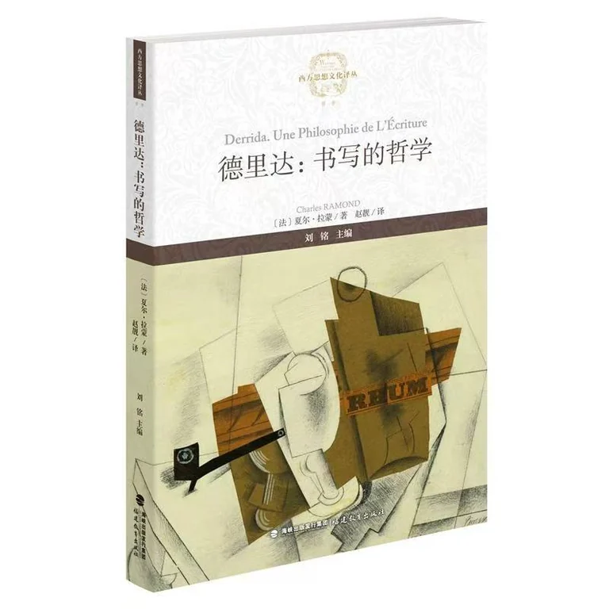

内容简介
本书包含两个关键内容，第一，全书以德里达的语言主题为论述对象，讨论其作为书写哲学的面貌及特征，具有逻辑性与基础性，结论章也不忘向政治伦理领域敞开，第二，作者怀有将德里达作为经典哲学家来介绍的愿望，因为德里达的理性批判一直是最经典哲学的一部分。作者的巧妙论证还表明，德里达思想的破坏性、潜能和先锋性乃是构筑这一经典的底色。
书目信息
- 作者
- 夏尔·拉蒙
- 译者
- 赵靓
- 出版社
- 福建教育出版社
- 出版时间
夏尔·拉蒙 著 / 赵靓 译 · 福建教育出版社 · 2024年8月

本书包含两个关键内容，第一，全书以德里达的语言主题为论述对象，讨论其作为书写哲学的面貌及特征，具有逻辑性与基础性，结论章也不忘向政治伦理领域敞开，第二，作者怀有将德里达作为经典哲学家来介绍的愿望，因为德里达的理性批判一直是最经典哲学的一部分。作者的巧妙论证还表明，德里达思想的破坏性、潜能和先锋性乃是构筑这一经典的底色。